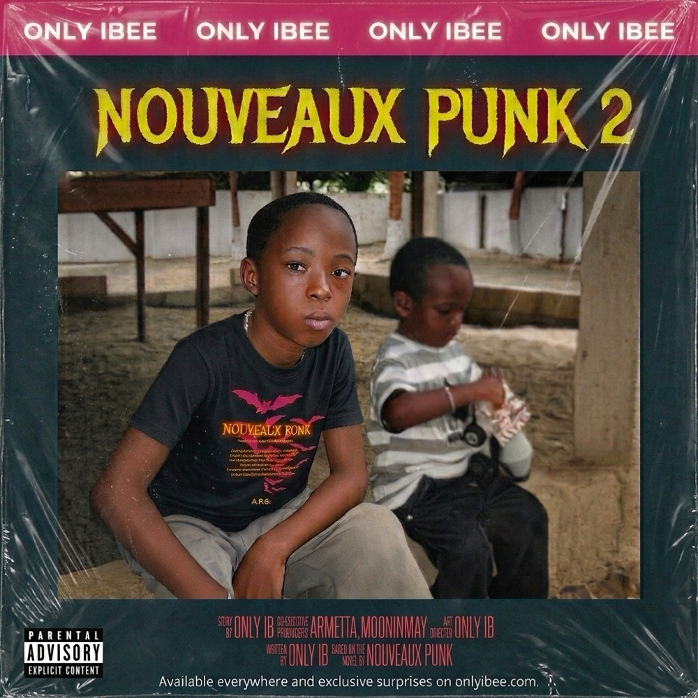

NOUVEAUX PUNK 2
— THE SEQUEL —
PARENTAL
ADVISORY
EXPLICIT CONTENT
ADVISORY
EXPLICIT CONTENT
// WHAT IS NP2_
26 songs for my 26 years. Made between Toronto and Paris over 3 to 4 years.
The first one was chaos, not caring, made in the dark. I care even less now. Facing the biggest emptiness and loneliness of my life.
This isn't for anyone's approval anymore, it's just proof of the work I've put in these past years.
THE FEED_
every song opens a different page of the archive — press one and watch_
ONLY IBEEONLY IBEEONLY IBEE
TRACK SIGNALS [26]
the whole sequel, open — tap a row to play it_
THE SURPRISES_
still in the plastic — each one cuts open on its own day_